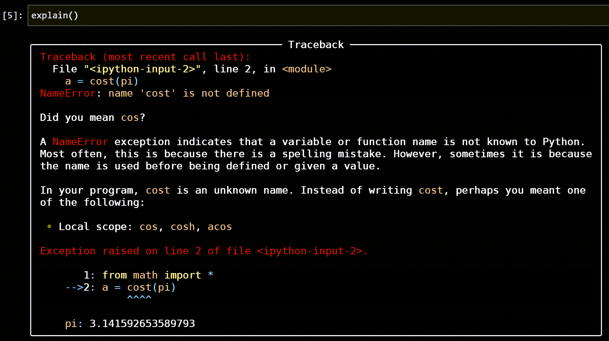

IPython and Jupyter notebooks¶
Friendly-traceback supports IPython console and Jupyter notebooks and variants. Currently, this has been done more as a proof of concept than anything else: we are not aware of anyone else having made use of this feature. We also almost never test it; please feel free to report any issues.
Installation and usage¶
To use Friendly-traceback in such environments, you need to do one or two things:
Import a special module that does the automatic installation and makes console commands available.
Optionally, set a different formatter.
Through various screenshots below, we document how to use Friendly-traceback with IPython, and show what you might expect.
The available commands are the same as those using a friendly-console;
see Console basics for details. Since this documentation could be
out of date, it is suggested that you use Python’s dir() to see
what commands area available.
Basic example (not IPython)¶
In what follows, we will always use the same example to generate an exception:
from math import *
a = cost(pi)
After the exception is raised, we will get more information using
explain(), so that we can show how well, or how poorly in a few cases,
the information is displayed.
For comparison, we start with the traceback shown using our friendly-console on Windows.

Using the IPython console in a terminal¶
In this section, we document our use of the IPython console in a Windows Terminal; we use the old-style cmd rather than the Windows PowerShell.
{kind=link}
By default, the ‘repl’ formatter is used: this is something that just copies the information provided by Friendly-traceback with no added formatting.
We can change this to use the ‘rich’ formatter, which is the same as for the non-IPython example above. However, the colours are completely different.

Furthermore, occasionally some file names are highlighted in such a way as to make them almost unreadable.

However, most IPython users will likely work in a different environment than a traditional console.
JupyterLab notebook¶
By default, tracebacks in JupyterLab notebooks (or Juypter notebooks) displayed in a browser are given a pink background. This remains the case if we use install Friendly-traceback without specifying a special formatter.

Using the ‘jupyter’ formatter definitely improves the appearance.

This formatter uses some HTML display feature of IPython. If we change the settings of JupyterLab to a dark theme, the display remains quite readable.

However, in this case, the ‘rich’ formatter might perhaps yield better looking tracebacks.
{kind=link}
In a JupyterLab environment, we can also use a console within a browser intead of a notebook. Here’s what it looks like with the ‘rich’ formatter.

Visual Studio Code¶
Visual Studio Code also supports IPython notebook. Here’s an example using the ‘rich’ formatter with the default dark theme for VS Code.


Google Colab¶
One can also use Google Colab notebooks. First, Friendly-traceback must be installed.

Then, we can proceed as for the other notebooks.